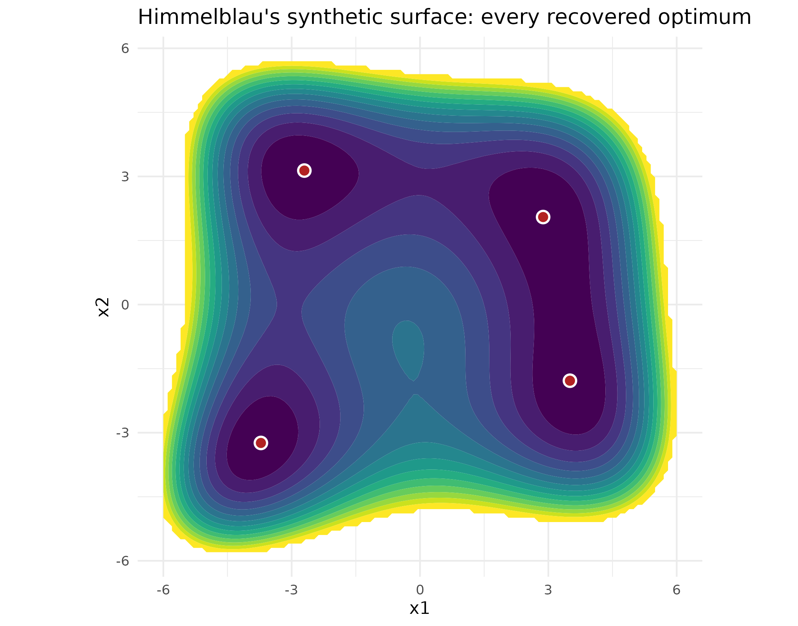

Why
A breeder ranking candidate sowing configurations against a cost function does not always want the single best combination back. If several configurations score within noise of each other, the one to actually plant can depend on constraints the cost function never saw – seed availability, rotation history, machinery on hand – and a plain argmin search shows only the first of those configurations it happened to converge to, never the rest. The question this vignette answers is: when a design surface has several solutions of essentially equal merit, can optimix hand back all of them, state plainly when it cannot, and package the answer for a system downstream rather than a person reading a console?
What
optimix_map() returns the distinct optima of a function
over a box, rather than a single best point. It has a native path
(always available, local search from many starts, clustered) and a
premium path (a calibrated Gaussian-mixture map, when a new-enough
proxymix is installed), and reports which one ran in its
source field. The same intent reaches the main verb through
goal = "map" on optimix(): auto
then routes to a map-emitting engine, or declines and says so plainly
when none fits, marking the returned optimix_result with
the optimix_map_abstention class so a caller can detect the
decline without parsing prose. as_orchestra_manifest()
re-expresses any result – mapped or not – as an
orchestra_manifest, the federation’s shared, hashed, typed
hand-off object (contract C2 v2 in ORCHESTRA.md’s
registry); verify_manifest() checks that hash.
Do
A synthetic surface with four equally good answers
The classic demonstration is a synthetic test surface, Himmelblau’s function, a two-dimensional cost surface with four global minima of equal depth:
himmelblau <- function(x) {
(x[1]^2 + x[2] - 11)^2 + (x[1] + x[2]^2 - 7)^2
}Two paths, one function
optimix_map() has a native path and a premium path, and
picks between them automatically. The native path is always available:
it runs a local search from many Latin-hypercube starts and clusters the
converged points into distinct optima, using nothing beyond base R. When
a new-enough proxymix is installed, the premium path returns a
calibrated Gaussian-mixture map over the optima instead – a queryable
posterior, carried in the result’s map field. The result’s
source field reports which path produced it:
set.seed(11)
map <- optimix_map(himmelblau, lower = c(-6, -6), upper = c(6, 6))
map
#> <optimix_map> 4 optima found (proxymix)
#> [1] value 0.214897 at -3.719, -3.240
#> [2] value 0.325735 at -2.704, 3.137
#> [3] value 0.347378 at 3.505, -1.783
#> [4] value 0.451811 at 2.878, 2.049
map$source
#> [1] "proxymix"| rank | x1 | x2 | value |
|---|---|---|---|
| 1 | -3.7192 | -3.2403 | 0.2149 |
| 2 | -2.7035 | 3.1372 | 0.3257 |
| 3 | 3.5050 | -1.7831 | 0.3474 |
| 4 | 2.8781 | 2.0490 | 0.4518 |
gx <- seq(-6, 6, length.out = 120L)
gy <- seq(-6, 6, length.out = 120L)
grid_df <- expand.grid(x1 = gx, x2 = gy)
grid_df$z <- apply(
grid_df, 1L, function(row) himmelblau(c(row[["x1"]], row[["x2"]]))
)
grid_df$z <- pmin(grid_df$z, 500)
modes_df <- data.frame(
x1 = map$modes[, 1L], x2 = map$modes[, 2L], rank = seq_len(map$n)
)
ggplot2::ggplot(grid_df, ggplot2::aes(x1, x2, z = z)) +
ggplot2::geom_contour_filled(bins = 14L) +
ggplot2::scale_fill_viridis_d(name = "objective\n(capped at 500)",
guide = "none") +
ggplot2::geom_point(
data = modes_df, ggplot2::aes(x1, x2), inherit.aes = FALSE,
colour = "white", fill = "firebrick", shape = 21L, size = 3L, stroke = 1L
) +
ggplot2::labs(
x = "x1", y = "x2",
title = "Himmelblau's synthetic surface: every recovered optimum"
) +
ggplot2::theme_minimal() +
ggplot2::coord_equal()
Himmelblau’s synthetic function, capped at 500 to keep the four wells legible; the points found by optimix_map() are marked in red, best (deepest) first. Four sit in visually identical, fully dark wells; a fifth, shallower point, when the premium path finds one, is set apart by sitting in a lighter band – exactly the shallow-artefact distinction a single printed value cannot show.
The marked points confirm that optimix_map() returned a
genuine set of distinct optima rather than the same well found
repeatedly – the outcome a plain argmin search cannot show, since it
stops at the first optimum it converges to.
The two paths answer the same question in different registers. On the
native path each optimum is polished by a local search, so the printed
values sit at effectively zero and the locations are sharp. On the
proxymix path the modes are peaks of a fitted mixture – a summary of
where the low-value mass lies – so locations are approximate and a
shallow extra mode can appear beside the true wells. The modes are
printed best first in either case, so deep optima separate from shallow
artefacts at a glance, and the modes and
values fields give the full set programmatically.
Asking auto for a map
The same intent can be declared on the main verb.
goal = "map" steers method = "auto" towards a
map-emitting engine, and the result carries the queryable mixture in
$map:
set.seed(12)
res <- optimix(himmelblau, lower = c(-6, -6), upper = c(6, 6), goal = "map")
summary(res)
#> Optimisation result
#> Chosen optimiser : proxymix_map
#> Reason : goal = map: proxymix_map returns the full set of optima + a posterior over the optimum (from_objective study, 2026-06-24)
#> Best value : 0.057594583
#> Best parameters : -3.75873, -3.24823
#> Evaluations used : 58793
#> Converged : yes
#> Optima mapped : 6The mixture path itself spends many cheap evaluations to map the
whole optimum set – res$counts runs well above a
single-point search’s budget when proxymix is installed and the chunk
above executes – so it suits inexpensive objectives, and the selector
reaches it only when a map is asked for.
When the map cannot be honoured
The fallback does not fabricate a map, and it is worth seeing happen
rather than taking on trust. proxymix_map is registered for
problems of dimension 10 or fewer; a 12-dimensional request for
goal = "map" is therefore outside its range whether or not
proxymix is installed, so auto cannot honour it and falls
back to the single best optimum instead of fabricating a map:
set.seed(7)
res_abstain <- optimix(
function(x) sum((x - 0.4)^2), lower = rep(-3, 12L), upper = rep(3, 12L),
goal = "map"
)
class(res_abstain)
#> [1] "optimix_map_abstention" "optimix_result"
inherits(res_abstain, "optimix_map_abstention")
#> [1] TRUE
res_abstain$provenance$engine
#> [1] "gensa"
res_abstain$provenance$why
#> [1] "goal = map requested but no map-emitting engine fits this problem (install 'proxymix' for the posterior over all optima, p <= 10); returning the single best optimum via gensa"optimix_map_abstention is prepended to the result’s
class vector rather than replacing it, so every ordinary
optimix_result method still applies, and a caller who only
wants to know whether the request was honoured can check
inherits(x, "optimix_map_abstention") without parsing the
why string. The same prepend-not-replace convention marks a
non-converged optimum’s manifest with
optimix_manifest_abstention, so both declines are
recognisable from the class vector alone.
The orchestra manifest
An optimisation result often feeds a downstream system rather than a
person, and as_orchestra_manifest() re-expresses a result
as a typed hand-off contract for that purpose – the C2 v2 generic
orchestra_manifest in ORCHESTRA.md’s contract
registry. The optimum rides in params as a one-row table.
The typed summary and metadata carry the engine, the convergence
verdict, and the true evaluation count. The
uncertainty_available flag records whether the manifest
carries a posterior over the optimum (a mixture map) or a bare point
estimate, so a consumer never mistakes one for the other. The payload is
integrity-hashed at emission, and verify_manifest()
recomputes the hash to detect any later modification:
best <- optimix(himmelblau, lower = c(-6, -6), upper = c(6, 6),
method = "base_optim")
m <- as_orchestra_manifest(best)
m@params
#> par1 par2 value
#> 1 3 2 7.433159e-13
m@summary$headline
#> [1] "optimum f = 7.43316e-13 via base_optim"
m@metadata$uncertainty_available
#> [1] FALSE
verify_manifest(m)
#> $ok
#> [1] TRUE
#>
#> $message
#> [1] "data_hash verified"Here a single-point engine produced the result, so the flag is
FALSE and the manifest offers only a point estimate, with
no invented uncertainty. Had the proxymix mixture engine run, the flag
would be TRUE and the metadata would carry the full
solution map alongside the optimum.
Read
Native or premium, optimix_map() recovered 4 optima on
this run, reported through the result’s source field as
“proxymix”. The table lists every one of them; the figure shows why the
count alone is not the full picture – whichever points sit in a
genuinely dark well are the deep, essentially tied optima, and any point
in a lighter band beside them is a shallow artefact of the fitting
procedure rather than a fifth true minimum.
With proxymix installed, asking auto for a map directly
reaches proxymix_map and spends 58793 evaluations mapping
the whole optimum set, an order of magnitude above a single-point
search’s typical budget – the price paid for a posterior over every
optimum rather than one point.
The 12-dimensional request makes the fallback concrete rather than
descriptive: its class carries optimix_map_abstention, optimix_result,
confirming optimix_map_abstention sits first, and its
provenance names the engine that actually ran (gensa) and
the reason the map itself was declined. The manifest section closes the
loop from either path to a downstream consumer:
m@summary$headline reads “optimum f = 7.43316e-13 via
base_optim”, verify_manifest(m)$ok is TRUE, and
metadata$uncertainty_available is FALSE because
base_optim produced this particular manifest – a point,
correctly labelled as one.
A package-level routing study compared optimix’s engines against
proxymix’s from_objective() mapper across seven
case-classes on functions with known analytic optima, independent of
both packages (comparisons/from_objective/, ORCHESTRA_dev,
2026-06-24); its tally is cited here and not recomputed. optimix won
five of the seven classes – every regime with a single best point to
find, smooth or multimodal, low-dimensional or high – and proxymix won
two: recovering every optimum of a multimodal surface in one fit, and
returning a genuine posterior over the optimum set. That is exactly the
split this vignette walks: reach for optimix_map() when the
deliverable is the whole set with a queryable map, and for plain
optimix() when it is the single best point.
Limits
Himmelblau’s function is a synthetic two-dimensional textbook surface with four exactly equal minima; it is chosen because the ground truth is known, not because it resembles a fielded design problem, and nothing here demonstrates how many equally good optima a real cost surface tends to carry. The premium path’s mode locations are read off a fitted mixture, not polished by a further local search, so their precision is lower than the native path’s; this vignette does not quantify that gap numerically; a reader who needs an error bound on a proxymix-reported location should treat it as approximate. The 12-dimensional abstention example is chosen to guarantee the decline deterministically, regardless of whether proxymix is installed; it does not explore the boundary case of a problem just inside the mixture engine’s dimension range, where the map may still degrade gracefully rather than abstain outright.
What to read next
Getting started with optimix covers the two front doors and
the result object this vignette builds on. The auto selector and
racing covers the rest of the selector’s decision surface – noise,
expense, budget – that goal = "map" sits alongside.
Combinatorial optimisation and delta evaluation covers the one
design space neither mapping nor racing reaches: permutations.
Reproduce
Seed 11 for the map, 12 for the
goal = "map" call, 7 for the 12-dimensional
abstention example.
sessionInfo()
#> R version 4.6.1 (2026-06-24)
#> Platform: x86_64-pc-linux-gnu
#> Running under: Ubuntu 24.04.5 LTS
#>
#> Matrix products: default
#> BLAS: /usr/lib/x86_64-linux-gnu/openblas-pthread/libblas.so.3
#> LAPACK: /usr/lib/x86_64-linux-gnu/openblas-pthread/libopenblasp-r0.3.26.so; LAPACK version 3.12.0
#>
#> locale:
#> [1] LC_CTYPE=C.UTF-8 LC_NUMERIC=C LC_TIME=C.UTF-8
#> [4] LC_COLLATE=C.UTF-8 LC_MONETARY=C.UTF-8 LC_MESSAGES=C.UTF-8
#> [7] LC_PAPER=C.UTF-8 LC_NAME=C LC_ADDRESS=C
#> [10] LC_TELEPHONE=C LC_MEASUREMENT=C.UTF-8 LC_IDENTIFICATION=C
#>
#> time zone: UTC
#> tzcode source: system (glibc)
#>
#> attached base packages:
#> [1] stats graphics grDevices utils datasets methods base
#>
#> other attached packages:
#> [1] optimix_0.2.0.9000
#>
#> loaded via a namespace (and not attached):
#> [1] mvnfast_0.2.8 gtable_0.3.6 jsonlite_2.0.0 compiler_4.6.1
#> [5] Rcpp_1.1.2 cmaes_1.0-12 parallel_4.6.1 dfoptim_2023.1.0
#> [9] jquerylib_0.1.4 systemfonts_1.3.2 scales_1.4.0 textshaping_1.0.5
#> [13] yaml_2.3.12 fastmap_1.2.0 ggplot2_4.0.3 R6_2.6.1
#> [17] labeling_0.4.3 proxymix_0.17.0 isoband_0.3.0 DEoptim_2.2-8
#> [21] knitr_1.52 nloptr_2.2.1 desc_1.4.3 bslib_0.12.0
#> [25] RColorBrewer_1.1-3 rlang_1.3.0 cachem_1.1.0 xfun_0.62
#> [29] fs_2.1.0 DiceKriging_1.6.1 sass_0.4.10 S7_0.2.2
#> [33] otel_0.2.0 viridisLite_0.4.3 cli_3.6.6 pkgdown_2.2.1
#> [37] withr_3.0.3 digest_0.6.39 grid_4.6.1 lifecycle_1.0.5
#> [41] DEoptimR_1.2-2 vctrs_0.7.3 GenSA_1.1.15 evaluate_1.0.5
#> [45] glue_1.8.1 farver_2.1.2 ragg_1.5.2 rmarkdown_2.32
#> [49] tools_4.6.1 htmltools_0.5.9